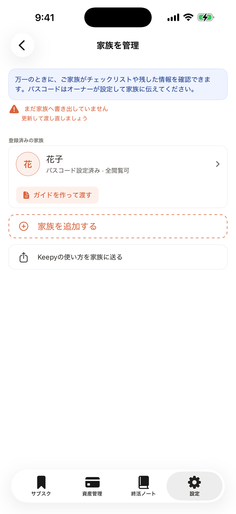
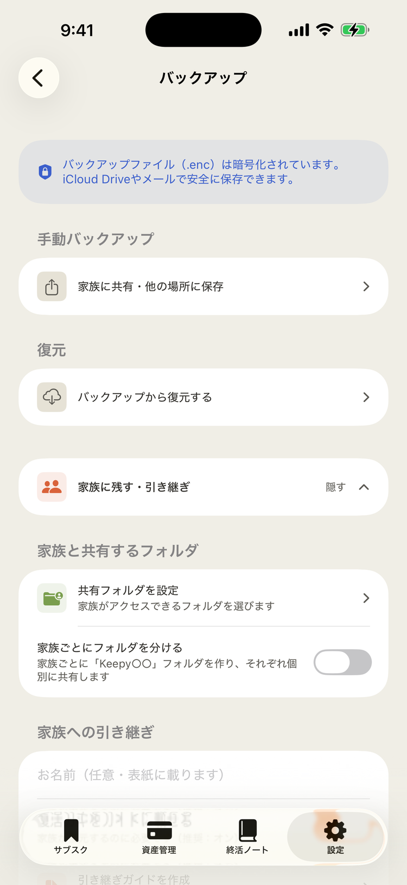
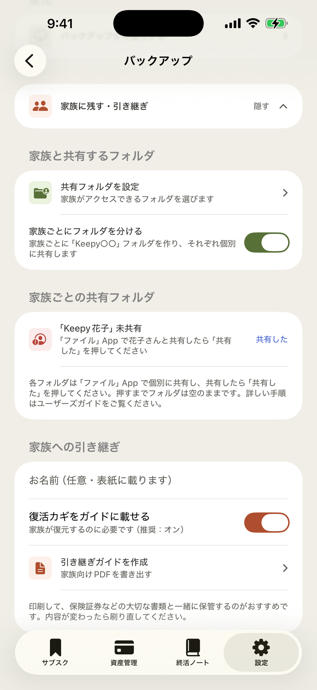
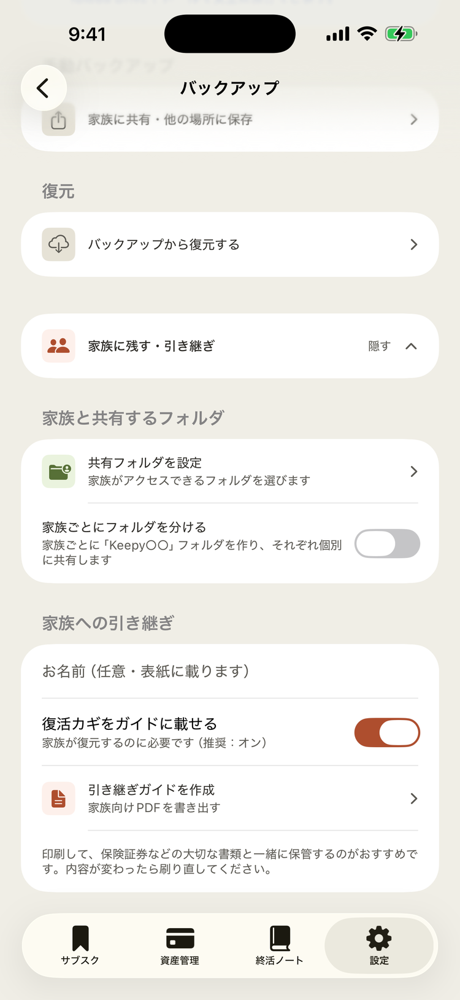
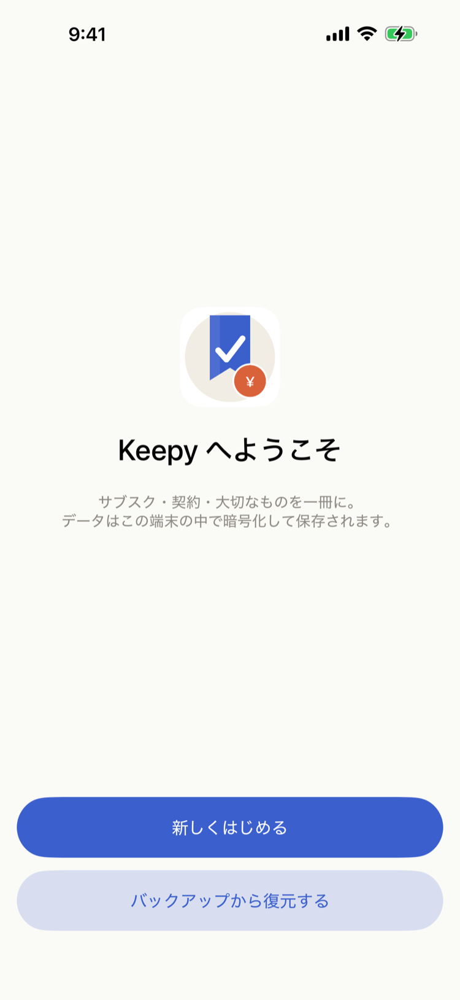

もしものとき、ご家族が困らないように。初回に「共有まで」やり切っておく手順をまとめました。
オーナーが共有フォルダを家族に共有し忘れると、いざというときご家族がデータにアクセスできません。初回に「③家族に共有」まで必ずやり切ってください。
下の5ステップを初回に済ませておけば、もしものときご家族が新しい端末でデータを復元し、手続きに必要な情報にたどり着けます。
STEP 1
「家族を管理」から、引き継ぐご家族を登録します。ご家族ごとに家族パスコードを設定してください（家族モードのログインに使います）。

STEP 2
iCloud Drive などに、引き継ぎ用のフォルダを1つ作ります。ここに暗号化ファイルと引き継ぎガイドを書き出します。

STEP 3
作ったフォルダを、引き継ぐご家族と共有します。この共有を忘れると家族が締め出されますので、必ずここまでやり切ってください。

STEP 4
アプリから、共有フォルダへ暗号化バックアップ（.enc）と引き継ぎガイドを書き出します。宛先ごとに書き出すと、それぞれのガイドにはそのご本人の家族パスコードだけが載ります。「Keepy○○（お名前）」のフォルダが自動で作られ、宛先別に整理されます。

STEP 5
もしものとき、ご家族は共有フォルダの暗号化ファイルと復活カギ（8語）を使って、新しい端末の Keepy にデータを復元します。あとは家族パスコードで家族モードにログインすれば、手続きに必要な情報が揃います。

iOS 17以上 · iPhone向け · 買い切り · 無料で試せます
App Storeでダウンロード（準備中）